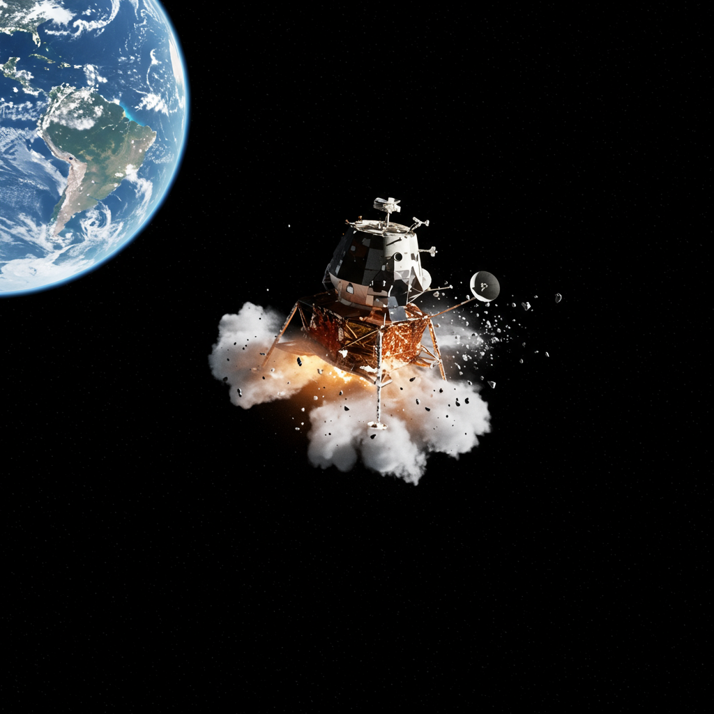

Apolo 13
Agencia: NASA
Fecha de lanzamiento: 11 de abril de 1970
Duración: 5 días, 22 horas, 54 minutos
Tipo de misión: Vuelo lunar tripulado (abortado)
Objetivo: Aterrizaje lunar en la región Fra Mauro
Carga científica: Instrumentos para experimentos geológicos y sísmicos (no utilizados)
⚠️ Emergencia en el espacio
Durante el viaje a la Luna, un tanque de oxígeno explotó en el módulo de servicio, dejando a la tripulación sin energía eléctrica y soporte vital adecuados. La misión fue abortada y los astronautas usaron el módulo lunar como bote salvavidas para regresar a la Tierra. Fue una odisea de supervivencia que desafió cada procedimiento técnico.
Impacto histórico
Apolo 13 no logró su objetivo científico, pero se convirtió en un símbolo de ingenio, trabajo en equipo y supervivencia bajo presión extrema. La frase “Houston, we’ve had a problem” quedó en la historia. Su regreso exitoso pese a la emergencia es considerado uno de los mayores logros de la ingeniería espacial.